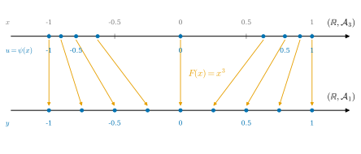
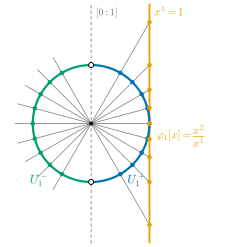

12.2 미분동형사상
이 절의 목표
- 다양체 사이의 미분동형사상을 정의하고, 미분동형사상이 차트를 차트로, 경계를 경계로 옮긴다는 것을 증명할 수 있다.
- \(\R\) 위의 서로 다른 두 매끄러운 구조 \(\mathcal{A}_1\), \(\mathcal{A}_3\)이 미분동형임을 보이고, “구조가 다르다”와 “미분동형이 아니다”를 구별할 수 있다.
- 토러스 \(T^2 = S^1 \times S^1\)과 원환면 \(T_{R,r} \subseteq \R^3\)이 미분동형임을 증명할 수 있다.
- 국소 미분동형사상을 정의하고, 사영 \(S^n \to \RP^n\)이 국소 미분동형사상이지만 미분동형사상은 아님을 보일 수 있다.
선수 지식
동기
12.1절에서 다양체 사이의 매끄러운 사상을 정의했다. 위상공간에서 “같은 공간”을 뜻하는 것이 위상동형사상이었듯이(정의 3.2.12), 매끄러운 다양체에서 “같은 다양체”를 뜻하는 것은 양쪽으로 매끄러운 전단사, 곧 미분동형사상이다. \(\R^n\)의 열린집합 사이에서는 2장에서 이미 정의했다(정의 2.3.1).
11장은 이 개념을 기다리는 질문 두 개를 남겼다. 첫째, \(\R\) 위의 두 매끄러운 구조 \(\mathcal{A}_1\)(항등 차트)과 \(\mathcal{A}_3\)(\(x^3\) 차트)은 서로 다른 극대 아틀라스다(예 11.2.13). 그렇다면 \((\R, \mathcal{A}_1)\)과 \((\R, \mathcal{A}_3)\)은 매끄러운 다양체로서도 서로 다른가? 둘째, 토러스 \(T^2 = S^1 \times S^1\)과 \(\R^3\)의 원환면 \(T_{R,r}\)은 위상동형이다(예 3.3.17). 둘 다 매끄러운 다양체인데(예 11.4.12, 12.1절), 매끄러운 다양체로서도 같은가? 이 절은 두 질문에 모두 “그렇다”로 답한다. 첫째 질문의 답은 약간 놀랍다. 구조는 달라도 다양체는 같다.

정의와 기본 성질
정의 12.2.1 (다양체 사이의 미분동형사상, diffeomorphism). \(M\), \(N\)이 매끄러운 다양체(경계가 있어도 된다)라 하자. 전단사 \(F\colon M \to N\)이 매끄럽고 역사상 \(F^{-1}\colon N \to M\)도 매끄러우면, \(F\)를 미분동형사상(diffeomorphism)이라 한다. 미분동형사상 \(M \to N\)이 있으면 \(M\)과 \(N\)이 미분동형이라 하고 \(M \cong N\)으로 쓴다.
이 절과 이 장의 뒤 절에서 \(\cong\)는 미분동형을 뜻한다. 1장에서는 선형 동형, 3장에서는 위상동형을 같은 기호로 썼다(기호표). \(M\), \(N\)이 \(\R^n\)의 열린집합이면 명제 12.1.7(g)에 의해 정의 12.2.1은 정의 2.3.1과 같고, 정칙곡면 사이에서는 6장의 정의 6.3.11과 같다(따름정리 12.2.7). 그래서 같은 이름을 쓴다.
명제 12.2.2 (미분동형사상의 기본 성질).
- (a) 미분동형사상은 위상동형사상이다.
- (b) 미분동형사상의 역사상과 두 미분동형사상의 합성은 미분동형사상이다. 따라서 “미분동형이다”는 매끄러운 다양체들 사이의 동치관계다.
- (c) \(F\colon M \to N\)이 미분동형사상이고 \(W \subseteq M\)이 열린집합이면 \(F(W)\)는 \(N\)의 열린집합이고, \(F|_W\colon W \to F(W)\)는 (열린부분다양체 사이의) 미분동형사상이다.
증명. (a) \(F\)와 \(F^{-1}\)이 매끄러우므로 연속이다(명제 12.1.7(a)). (b) 역사상에 대해서는 정의가 대칭이다. \(F\colon M \to N\), \(G\colon N \to P\)가 미분동형사상이면 \(G \circ F\)는 전단사이고, \(G \circ F\)와 역사상 \(F^{-1} \circ G^{-1}\)은 매끄러운 사상의 합성이므로 매끄럽다(명제 12.1.7(d)). 반사성은 \(\id_M\)이 매끄럽다는 것(명제 12.1.7(e))에서 나온다. (c) \(F(W) = (F^{-1})^{-1}(W)\)는 연속사상 \(F^{-1}\)에 의한 열린집합의 역상이므로 열려 있다. \(F|_W\)는 \(W\)에서 \(F(W)\) 위로의 전단사이고, 명제 12.1.7(e), (f)에 의해 매끄럽다. 그 역사상은 \(F^{-1}|_{F(W)}\)이고 같은 이유로 매끄럽다.
미분동형사상은 매끄러운 구조 전체를 옮긴다. 가장 기본적인 형태는 차트를 차트로 옮긴다는 것이다.
명제 12.2.3 (미분동형사상은 차트와 경계를 옮긴다). \(F\colon M \to N\)이 매끄러운 다양체(경계가 있어도 된다) 사이의 미분동형사상이라 하자.
- (a) \((V, \psi)\)가 \(N\)의 매끄러운 차트이면 \((F^{-1}(V), \psi \circ F)\)는 \(M\)의 매끄러운 차트다.
- (b) \(M\)과 \(N\)이 경계를 갖는 매끄러운 다양체이면 \(F(\partial M) = \partial N\)이고 \(F(\operatorname{Int} M) = \operatorname{Int} N\)이다.
- (c) \(M \ne \varnothing\)이면 \(\dim M = \dim N\)이다.
증명 아이디어: (c)를 먼저 보인다. 내부점 근처에서 \(F\)의 좌표표현은 \(\R^m\)과 \(\R^n\)의 열린집합 사이의 미분동형사상이므로 \(m = n\)이다. 그러면 \(\psi \circ F\)는 \(M\)과 같은 차원의 차트이고, 이것과 \(M\)의 차트 \(\varphi\) 사이의 좌표변환은 \(F\)와 \(F^{-1}\)의 좌표표현 그 자체다. 둘 다 매끄러우므로 \(\psi \circ F\)는 극대 아틀라스에 들어간다. (b)는 옮겨 온 차트로 경계점을 비교한다.
증명. \(n = \dim N\), \(m = \dim M\)이라 하자. (a), (b)는 \(N\)의 차트를 \(M\)의 차트로 옮기므로 \(m = n\)이 필요하다. 그래서 (c)를 먼저, (a)와 (b)를 쓰지 않고 보인다.
(c) 관찰. 경계를 갖는 매끄러운 \(k\)-다양체 \(X\)의 공집합이 아닌 열린집합 \(O\)는 내부점을 포함한다. \(X\)에 경계가 없으면 모든 점이 내부점이다. 경계가 있으면 \(O\)의 한 점 둘레의 매끄러운 차트를 \(O\)와의 교집합으로 줄여 \((V, \psi)\)를 얻는다(명제 11.2.14(a), 비고 11.5.10). \(\psi(V)\)가 \(\R^k\)에서 열려 있으면 \((V, \psi)\)는 내부 차트이므로 \(V \subseteq O\)의 점은 모두 내부점이다. \(\psi(V) = W \cap \mathbb{H}^k\) (\(W\)는 \(\R^k\)에서 열림)이면, 점 \(y \in \psi(V)\)와 충분히 작은 \(\varepsilon \gt 0\)에 대해 \(y + \varepsilon e_k \in W\)이고 그 \(k\)번째 성분은 양수이므로 \(y + \varepsilon e_k = \psi(q)\)인 \(q \in V\)가 있다. \(\psi(q) \in \operatorname{Int}\mathbb{H}^k\)이므로 \(q \in O\)는 내부점이다(보조정리 11.5.5).
\(M \ne \varnothing\)이므로 관찰에 의해 내부점 \(p\)와 \(p\) 둘레의 매끄러운 내부 차트 \((U, \varphi)\)가 있다. \(F\)는 위상동형사상이므로(명제 12.2.2(a)) \(F(U)\)는 \(N\)의 공집합이 아닌 열린집합이고, 다시 관찰에 의해 내부점 \(q \in F(U)\)와 \(q\) 둘레의 매끄러운 내부 차트 \((V, \psi)\)가 있다. \(V\)를 \(V \cap F(U)\)로 줄이고 \(U' = F^{-1}(V) \subseteq U\)라 하자. 그러면 \(\varphi(U')\)는 \(\R^m\)의 열린집합, \(\psi(V)\)는 \(\R^n\)의 열린집합이고, \(\psi \circ F \circ \varphi^{-1}\colon \varphi(U') \to \psi(V)\)와 \(\varphi \circ F^{-1} \circ \psi^{-1}\colon \psi(V) \to \varphi(U')\)은 서로 역이다. 둘은 \(F\)와 \(F^{-1}\)의 좌표표현이므로 명제 12.1.7(b)에 의해 매끄럽고, 따라서 미분동형사상이다. 명제 2.3.4에 의해 \(m = n\)이다.
(a) \(F\)가 연속이므로 \(F^{-1}(V)\)는 \(M\)의 열린집합이고, \(\psi \circ F\)는 위상동형사상 \(F|_{F^{-1}(V)}\colon F^{-1}(V) \to V\)와 \(\psi\)의 합성이므로 \(F^{-1}(V)\)에서 \(\psi(V)\) 위로의 위상동형사상이다. (c)에 의해 \(n = m\)이므로 \(\psi(V)\)는 \(\R^m\) 또는 \(\mathbb{H}^m\)의 열린집합이고, \((F^{-1}(V), \psi \circ F)\)는 \(M\)의 차트다. \((U, \varphi)\)가 \(M\)의 매끄러운 차트이면 두 좌표변환은
이고, 각각 \(F\)와 \(F^{-1}\)의 좌표표현이므로 명제 12.1.7(b)에 의해 매끄럽다(경계가 있으면 비고 12.1.12의 뜻으로). 따라서 \((F^{-1}(V), \psi \circ F)\)는 \(M\)의 모든 매끄러운 차트와 매끄럽게 호환되고, 매끄러운 구조의 극대성에 의해 매끄러운 차트다.
(b) \(q \in \partial N\)이고 \(p = F^{-1}(q)\)라 하자. 정의 11.5.4에 의해(매끄러운 차트로 읽는다, 비고 11.5.10) \(\psi(q) \in \partial\mathbb{H}^n\)인 매끄러운 경계 차트 \((V, \psi)\)가 있다. (a)에 의해 \((F^{-1}(V), \psi \circ F)\)는 \(M\)의 매끄러운 차트이고, 치역 \(\psi(V)\)는 \(\mathbb{H}^n\)의 열린집합이며 \(\psi(F(p)) = \psi(q) \in \partial\mathbb{H}^n\)이다. 즉 \(p\)를 \(\partial\mathbb{H}^n\)으로 보내는 매끄러운 경계 차트이므로 \(p \in \partial M\)이다. 따라서 \(F^{-1}(\partial N) \subseteq \partial M\)이다. \(F^{-1}\)에 같은 논증을 하면 \(F(\partial M) \subseteq \partial N\)이므로 \(F(\partial M) = \partial N\)이다. 정리 11.5.11에 의해 \(\operatorname{Int} M = M \setminus \partial M\), \(\operatorname{Int} N = N \setminus \partial N\)이고 \(F\)가 전단사이므로 \(F(\operatorname{Int} M) = \operatorname{Int} N\)이다.
예 12.2.4 (미분동형사상의 예). (a) 차트는 미분동형사상이다. \((U, \varphi)\)가 \(M\)의 매끄러운 차트이면 \(\varphi\colon U \to \varphi(U)\)는 열린부분다양체 \(U\)에서 \(\R^n\)(경계 차트이면 \(\mathbb{H}^n\))의 열린집합 \(\varphi(U)\)로 가는 미분동형사상이다. 차트 쌍 \((U, \varphi)\), \((\varphi(U), \id)\)에 대한 \(\varphi\)의 좌표표현은 \(\id\)이고, \(\varphi^{-1}\)의 좌표표현도 \(\id\)이기 때문이다. \(M\)에 경계가 없으면 명제 11.2.14(c)와 합쳐, 모든 점은 \(\R^n\)과 미분동형인 열린 근방을 가진다.
(b) \(\RP^n\)의 \(U_i\)는 \(\varphi_i\)에 의해 \(\R^n\)과 미분동형이고, \(S^n \setminus \{N\}\)은 \(\sigma\)에 의해 \(\R^n\)과 미분동형이다. 11장에서 “12장의 말로는 \(U_i\)와 \(\R^n\)이 미분동형”이라고 한 것(예 11.4.5(c))이 (a)의 특수한 경우다.
(c) 열린 단위공 \(B^n\)과 \(\R^n\)은 \(F(x) = x/\sqrt{1 - \abs{x}^2}\)에 의해 미분동형이다(예 2.3.2(c)). 공은 “작아 보여도” 매끄러운 다양체로서 \(\R^n\)과 같다.
(d) \(A\)가 \((n+1) \times (n+1)\) 직교행렬이면 \(x \mapsto Ax\)는 \(S^n\)을 \(S^n\)으로 보내고, \(S^n\)의 미분동형사상이다. \(\iota \circ (A|_{S^n}) = A \circ \iota\)가 매끄러우므로 명제 12.1.8(b)에 의해 매끄럽고, 역사상 \(A^{\mathsf T}|_{S^n}\)도 같다. \(A = -I_{n+1}\)이면 대척사상 \(a(x) = -x\)다.
다른 구조, 같은 다양체
예 12.2.5 (\((\R, \mathcal{A}_3) \cong (\R, \mathcal{A}_1)\)). \(\mathcal{A}_3\)은 차트 \(\psi(x) = x^3\)이 정하는 \(\R\)의 매끄러운 구조이고 \(\mathcal{A}_1\)은 표준 구조다(예 11.2.13). \(F\colon (\R, \mathcal{A}_3) \to (\R, \mathcal{A}_1)\), \(F(x) = x^3\)이 미분동형사상임을 보이자. \(F\)는 전단사이고 역사상은 \(F^{-1}(y) = y^{1/3}\)이다. 차트 쌍 \((\R, \psi) \in \mathcal{A}_3\), \((\R, \id) \in \mathcal{A}_1\)에 대한 두 좌표표현은
이다(그림 12.2.1). 둘 다 항등사상이므로 매끄럽고, 두 차트는 각각 \(\R\) 전체를 덮으므로 정의 12.1.6의 조건이 모든 점에서 성립한다. 따라서 \(F\)와 \(F^{-1}\)은 매끄럽고, \(F\)는 미분동형사상이다.
이것이 예 11.2.13 뒤의 예고 상자가 말한 것이다. \(\mathcal{A}_1 \ne \mathcal{A}_3\)이므로 두 구조는 집합 \(\R\) 위의 구조로서는 다르지만, 매끄러운 다양체로서는 \(F\)로 이름만 바꾼 같은 것이다. 실제로 명제 12.2.3(a)를 \(F\)와 \(F^{-1}\)에 쓰면 \(\mathcal{A}_3\)의 차트는 모두 \((F^{-1}(V), \theta \circ F)\) (\((V, \theta) \in \mathcal{A}_1\)) 꼴이다. \(\mathcal{A}_3\)의 차트 \((W, \varphi)\)는 \((F(W), \varphi \circ F^{-1}) \in \mathcal{A}_1\)에서 이렇게 얻어지기 때문이다. \(\mathcal{A}_3\)은 \(\mathcal{A}_1\)을 \(F\)로 끌어온 구조다.
검증: verify/v-12-2-diffeomorphisms.py
비예 12.2.6 (미분동형사상이 아닌 위상동형사상). (a) 항등사상 \(\id\colon (\R, \mathcal{A}_3) \to (\R, \mathcal{A}_1)\)은 위상동형사상이지만 매끄럽지 않다. 차트 \(\psi\)와 \(\id\)에 대한 좌표표현이 \(\id \circ \id \circ \psi^{-1}(u) = u^{1/3}\)이고, 이것은 \(0\)에서 미분가능하지 않기 때문이다(명제 12.1.7(b)). 같은 집합 위의 항등사상이라도 양쪽 구조가 다르면 미분동형사상이 아닐 수 있다.
(b) 표준 구조의 \(\R\)에서 \(F(x) = x^3\)은 매끄러운 위상동형사상이지만 미분동형사상이 아니다. 역사상 \(y \mapsto y^{1/3}\)이 \(0\)에서 매끄럽지 않기 때문이다(비예 2.3.3). (a)와 이 비예를 예 12.2.5와 비교하면, 같은 식 \(x^3\)도 양쪽에 어떤 구조를 주느냐에 따라 미분동형사상이기도 하고 아니기도 하다.
(c) \(\R\)과 \(S^1\)은 미분동형이 아니다. 미분동형이면 위상동형인데(명제 12.2.2(a)), \(S^1\)은 컴팩트하고(예 3.6.8(a)) \(\R\)은 컴팩트하지 않다(비예 3.6.3(a)). 컴팩트성은 연속상으로 옮겨지므로(명제 3.6.5(c)) 위상동형인 두 공간은 둘 다 컴팩트하거나 둘 다 아니다.
정칙곡면과 토러스
정칙곡면 사이의 미분동형사상은 6장에서 정의했다. 호환성 명제(명제 12.1.11)에서 곧바로 두 정의가 같음을 얻는다.
따름정리 12.2.7 (정칙곡면 사이의 미분동형사상). \(S_1\), \(S_2\)가 정칙곡면이고 \(\varphi\colon S_1 \to S_2\)가 전단사이면, \(\varphi\)가 정의 6.3.11의 뜻으로 미분동형사상일 필요충분조건은 정의 12.2.1의 뜻으로 미분동형사상인 것이다.
증명. 두 정의 모두 “\(\varphi\)와 \(\varphi^{-1}\)이 매끄럽다”이고, 명제 12.1.11(b)(\(O = S_1\), 그리고 \(O = S_2\)로 \(\varphi^{-1}\)에)에 의해 두 “매끄럽다”는 같은 뜻이다.
따라서 6장의 예들, 예를 들어 구면의 대척사상과 회전(예 6.3.12(a))은 매끄러운 다양체 사이의 미분동형사상이다. 이제 곱다양체와 정칙곡면을 잇는 예를 보자.
예 12.2.8 (토러스와 원환면: \(T^2 \cong T_{R,r}\)). \(0 \lt r \lt R\)이라 하자. 토러스 \(T^2 = S^1 \times S^1\)에는 곱 구조를(예 11.4.12), 원환면 \(T_{R,r} = \mathbf{x}(\R^2) \subseteq \R^3\)(예 6.5.8)에는 정칙곡면의 구조를 준다. 예 3.3.17의 위상동형사상 \(\Phi\colon T^2 \to T_{R,r}\)과 그 역사상 \(\Psi\)
가 둘 다 매끄러움을 보이자(\(a = (a^1, a^2)\), \(b = (b^1, b^2) \in S^1\)). 그러면 \(\Phi\)는 미분동형사상이고 \(T^2 \cong T_{R,r}\)이다.
- \(\Phi\)가 매끄러움. 명제 12.1.11(c)에 의해 \(\iota \circ \Phi\colon T^2 \to \R^3\)이 매끄러운지 보면 된다. \(\iota_1\colon S^1 \to \R^2\)를 포함사상이라 하면 \(J = (\iota_1 \circ \pi_1,\ \iota_1 \circ \pi_2)\colon T^2 \to \R^2 \times \R^2\)는 성분이 매끄러우므로 매끄럽다(명제 12.1.8(a), (b)). \(\R^2 \times \R^2\)의 곱 구조는 곱 차트 \(\id \times \id\) 하나가 정하므로 \(\R^4\)의 표준 구조와 같다. 다항식 사상 \(P(a, b) = \big((R + ra^1)b^1, (R + ra^1)b^2, ra^2\big)\)에 대해 \(\iota \circ \Phi = P \circ J\)이므로 매끄럽다.
- \(\Psi\)가 매끄러움. 명제 12.1.8(a), (b)에 의해 두 성분 \(\Psi_1, \Psi_2\colon T_{R,r} \to S^1\)에 대해 \(\iota_1 \circ \Psi_i\colon T_{R,r} \to \R^2\)가 매끄러운지 보면 된다. \(O = \{p \in \R^3 : (p^1, p^2) \ne (0, 0)\}\)은 \(T_{R,r}\)를 포함하는 열린집합이고(예 6.5.8), 그 위에서 \(\rho\)는 매끄럽다. \(G_1(p) = ((\rho - R)/r,\ p^3/r)\)와 \(G_2(p) = (p^1/\rho,\ p^2/\rho)\)는 \(O\)에서 매끄럽고 \(\iota_1 \circ \Psi_i = G_i \circ \iota\)이다. \(\iota\colon T_{R,r} \to O\)는 매끄러우므로(명제 12.1.11(c), 명제 12.1.7(f)) \(\iota_1 \circ \Psi_i\)는 매끄럽다.
- 서로 역. \(\Psi \circ \Phi = \id_{T^2}\), \(\Phi \circ \Psi = \id_{T_{R,r}}\)은 예 3.3.17에서 확인했다.
좌표로 보기. \(T^2\)의 각 차트 \(\alpha \times \alpha\)와 원환면의 매개화 \(\mathbf{x}|_{(-\pi, \pi)^2}\)(예 6.5.8에서 \(a = b = -\pi\))가 주는 차트 \(\mathbf{x}^{-1}\)에 대한 \(\Phi\)의 좌표표현은 \(\mathbf{x}^{-1} \circ \Phi \circ (\alpha \times \alpha)^{-1} = \id_{(-\pi, \pi)^2}\)이다. \(\Phi \circ (\alpha \times \alpha)^{-1} = \mathbf{x}\)이기 때문이다(예 11.4.12). 곧 원환면의 기준 매개화의 매개변수 \((u, v)\)는 토러스의 각 좌표이고, 이 좌표로 보면 미분동형사상 \(\Phi\)는 항등사상이다. 이로써 3장에서 위상동형으로 시작한 “토러스와 원환면”은 매끄러운 다양체로서도 같은 것이 된다. 이름은 여전히 구별한다. 곱다양체는 토러스 \(T^2\), \(\R^3\)의 곡면은 원환면 \(T_{R,r}\)이다.
검증: verify/v-12-2-diffeomorphisms.py (\(\Phi \circ (\alpha \times \alpha)^{-1} = \mathbf{x}\)는 dgsym.EXAMPLES["torus"]로 확인)
국소 미분동형사상
사영 \(\pi_S\colon S^n \to \RP^n\)(예 12.1.9)은 두 점 \(\pm x\)를 한 점으로 보내므로 전단사가 아니다. 그러나 반구 하나로 제한하면 좌표표현이 미분동형사상 \(w \mapsto w/\sqrt{1 - \abs{w}^2}\)였다((12.1.7)). 이렇게 “국소적으로는 미분동형사상”인 사상에 이름을 붙인다.
정의 12.2.9 (국소 미분동형사상, local diffeomorphism). \(M\), \(N\)이 매끄러운 다양체이고 \(F\colon M \to N\)이라 하자. 모든 \(p \in M\)에 대하여 \(p\)의 열린 근방 \(U\)가 있어서 \(F(U)\)가 \(N\)의 열린집합이고 \(F|_U\colon U \to F(U)\)가 (열린부분다양체 사이의) 미분동형사상이면, \(F\)를 국소 미분동형사상(local diffeomorphism)이라 한다.
6장의 정의 6.4.10(그리고 그것이 일반화한 2장의 정의 2.3.8)는 \(F\)가 매끄럽다는 것을 먼저 가정했다. 여기서는 매끄러움이 정의에서 따라 나온다(명제 12.2.10(a)). 정칙곡면의 열린집합 \(O\)에서 정의된 사상 \(\varphi\colon O \to S_2\)에 대해 두 정의가 같다는 것은, 명제 12.1.11(b)를 \(\varphi\)와 국소 역사상 \((\varphi|_{O_p})^{-1}\colon \varphi(O_p) \to S_1\)에 쓰면 나온다. 두 정의의 “매끄럽다”가 같은 뜻이기 때문이다.
명제 12.2.10 (국소 미분동형사상의 성질). \(F\colon M \to N\)이 국소 미분동형사상이라 하자.
- (a) \(F\)는 매끄럽고 열린사상이다.
- (b) 미분동형사상은 국소 미분동형사상이고, 국소 미분동형사상의 합성과 열린부분다양체로의 제한은 국소 미분동형사상이다.
- (c) 전단사인 국소 미분동형사상은 미분동형사상이다.
- (d) \(F\)가 전사이면, 사상 \(G\colon N \to P\)(\(P\)는 매끄러운 다양체)가 매끄러울 필요충분조건은 \(G \circ F\)가 매끄러운 것이다.
증명. 점 \(p\)마다 정의의 근방을 \(U_p\)로 쓴다. (a) \(F|_{U_p}\)가 매끄러우므로 명제 12.1.7(c), (f)에 의해 \(F\)는 매끄럽다. \(W \subseteq M\)이 열려 있으면 \(F(W) = \bigcup_p F(W \cap U_p)\)이다. \(F|_{U_p}\)는 위상동형사상이므로 \(F(W \cap U_p)\)는 \(F(U_p)\)에서 열려 있고, \(F(U_p)\)가 \(N\)에서 열려 있으므로 \(N\)에서도 열려 있다. 따라서 \(F(W)\)는 열려 있다.
(b) 미분동형사상은 \(U_p = M\)으로 두면 된다. 제한: \(W\)가 열려 있으면 \(F|_{W \cap U_p}\)는 \(F|_{U_p}\)를 열린집합으로 제한한 것이므로 명제 12.2.2(c)에 의해 그 상 위로의 미분동형사상이다. 합성: \(G\colon N \to P\)도 국소 미분동형사상이고 \(V\)가 \(F(p)\)에 대한 정의의 근방이라 하자. \(U' = U_p \cap F^{-1}(V)\)로 두면 \(F|_{U'}\colon U' \to F(U')\)와 \(G|_{F(U')}\colon F(U') \to G(F(U'))\)는 (방금 본 제한에 의해) 미분동형사상이고 상은 열려 있으므로, 합성 \((G \circ F)|_{U'}\)는 열린집합 위로의 미분동형사상이다(명제 12.2.2(b)).
(c) \(F\)가 전단사이면 역사상 \(F^{-1}\)이 있고, \(F\)는 (a)에 의해 매끄럽다. \(F\)가 전사이므로 모든 \(q \in N\)은 \(q = F(p)\) 꼴이다. \(q\)의 열린 근방 \(F(U_p)\) 위에서 \(F\)가 단사이므로 \(F^{-1}|_{F(U_p)} = (F|_{U_p})^{-1}\)이고 이것은 매끄럽다. 명제 12.1.7(c)에 의해 \(F^{-1}\)은 매끄럽다.
(d) (\(\Rightarrow\))는 합성이다. (\(\Leftarrow\)) \(q \in N\)이면 \(F\)가 전사이므로 \(q = F(p)\)인 \(p\)가 있다. 열린 근방 \(F(U_p)\) 위에서 \(F \circ (F|_{U_p})^{-1} = \id\)이므로 \(G|_{F(U_p)} = (G \circ F) \circ (F|_{U_p})^{-1}\)이고, 매끄러운 사상의 합성이므로 매끄럽다. 명제 12.1.7(c)에 의해 \(G\)는 매끄럽다.
예 12.2.11 (국소 미분동형사상의 예). (a) \(\pi_S\colon S^n \to \RP^n\). \([x] \in U_i\)이면 \(x^i \ne 0\)이므로 단위벡터 \(\pm x/\abs{x}\) 가운데 \(i\)번째 성분이 양수인 것이 꼭 하나 있다. 따라서 \(\pi_S\)를 반구 \(U_i^+\)로 제한한 \(\pi_S|_{U_i^+}\colon U_i^+ \to U_i\)는 전단사다. 차트 \(\varphi_i^+\colon U_i^+ \to B^n\)과 \(\varphi_i\colon U_i \to \R^n\)은 미분동형사상이고(예 12.2.4(a)), (12.1.7)에서 \(\pi_S|_{U_i^+} = \varphi_i^{-1} \circ F \circ \varphi_i^+\), \(F(w) = w/\sqrt{1 - \abs{w}^2}\)이다. \(F\)는 미분동형사상 \(B^n \to \R^n\)이므로(예 12.2.4(c)) \(\pi_S|_{U_i^+}\)는 미분동형사상이고, 역사상은
이다(예 2.3.2(c)의 역사상 \(G(y) = y/\sqrt{1 + \abs{y}^2}\)를 쓰고, \(\abs{j_i(u)} = \sqrt{1 + \abs{u}^2}\)). 곧 직선 \([x]\)를 그 위의 “\(i\)번째 성분이 양수인 단위벡터”로 보낸다. \(U_i^-\)도 같다. 반구들이 \(S^n\)을 덮으므로 \(\pi_S\)는 국소 미분동형사상이다(그림 12.2.2). 그러나 \(\pi_S(x) = \pi_S(-x)\)이므로 미분동형사상은 아니다. 명제 12.2.10(d)에 의해 \(f\colon \RP^n \to \R\)이 매끄러울 필요충분조건은 \(f \circ \pi_S\)가 매끄러운 것이다. 예를 들어 예 12.1.3(d)의 \(f[x] = (x^1)^2/\abs{x}^2\)은 \(f \circ \pi_S(x) = (x^1)^2\)이 다항식의 제한이므로 매끄럽다.
(b) \(e\colon \R \to S^1\), \(e(t) = (\cos t, \sin t)\). \(e\)는 매끄럽다(명제 12.1.8(b)). \(t_0 \in \R\)이라 하자. \(t_0 = 2k\pi + s\) (\(k \in \Z\), \(-\pi \lt s \le \pi\))로 쓴다. \(s \ne \pi\)이면 구간 \(I = (2k\pi - \pi, 2k\pi + \pi)\)에서 \(e|_I = \alpha^{-1} \circ \tau\)이다. 여기서 \(\tau(t) = t - 2k\pi\)는 \(I\)에서 \((-\pi, \pi)\) 위로의 미분동형사상이고, \(\alpha^{-1}\)은 각 차트(예 11.3.7)의 역사상이므로 미분동형사상이다(예 12.2.4(a)). \(s = \pi\)이면 구간 \(I' = (2k\pi, 2k\pi + 2\pi)\)에서 \(e(t) = -e(t - \pi)\)이므로 \(e|_{I'} = a \circ \alpha^{-1} \circ \tau'\), \(\tau'(t) = t - 2k\pi - \pi\)이다(\(a\)는 대척사상, 예 12.2.4(d)). 어느 경우든 \(t_0\)의 열린 근방에서 \(e\)는 열린집합 위로의 미분동형사상이다. 따라서 \(e\)는 국소 미분동형사상이지만 단사가 아니므로 미분동형사상이 아니다.
검증: verify/v-12-2-diffeomorphisms.py

요약
- 미분동형사상은 양쪽으로 매끄러운 전단사다. \(\R^n\)의 열린집합 사이에서는 2장의 정의와, 정칙곡면 사이에서는 6장의 정의와 같다(따름정리 12.2.7). “미분동형이다”는 동치관계이고, 이 장부터 \(\cong\)로 쓴다.
- 미분동형사상은 차트를 차트로, 경계를 경계로 옮기고 차원을 보존한다(명제 12.2.3). 매끄러운 차트는 그 상 위로의 미분동형사상이다.
- \(F(x) = x^3\)은 \((\R, \mathcal{A}_3)\)에서 \((\R, \mathcal{A}_1)\)로 가는 미분동형사상이다. 매끄러운 구조가 달라도 미분동형일 수 있다.
- 토러스 \(T^2\)와 원환면 \(T_{R,r}\)은 미분동형이고, 각 좌표와 기준 매개화로 보면 그 미분동형사상은 항등사상이다(예 12.2.8).
- 국소 미분동형사상은 점마다 열린 근방에서 미분동형사상인 사상이다. \(\pi_S\colon S^n \to \RP^n\)과 \(e\colon \R \to S^1\)은 국소 미분동형사상이지만 미분동형사상은 아니다. 전단사인 국소 미분동형사상은 미분동형사상이다.
지금까지의 매끄러운 함수와 사상은 모두 차트 안에서 국소적으로 정의되고 판정되었다. 다음 절에서는 반대 방향의 도구, 곧 “한 곳에서는 \(1\)이고 먼 곳에서는 \(0\)인” 매끄러운 함수를 만든다. 2장의 함수 \(e^{-1/t}\)가 출발점이다.
연습문제
연습 12.2.1 ★ \(S^n \setminus \{N\}\)과 열린 단위공 \(B^n\)이 미분동형임을 보이고, 미분동형사상 하나를 식으로 써라.
풀이
\(\sigma\colon S^n \setminus \{N\} \to \R^n\)은 차트이므로 미분동형사상이고(예 12.2.4(a)), \(G(y) = y/\sqrt{1 + \abs{y}^2}\colon \R^n \to B^n\)도 미분동형사상이다(예 2.3.2(c)). 명제 12.2.2(b)에 의해 합성 \(G \circ \sigma\)는 미분동형사상이다. \(x \in S^n \setminus \{N\}\)이면 \(\abs{x'}^2 = 1 - (x^{n+1})^2\)이므로 \(1 + \abs{\sigma(x)}^2 = 1 + \dfrac{1 - (x^{n+1})^2}{(1 - x^{n+1})^2} = \dfrac{2}{1 - x^{n+1}}\)이고,
\[ G(\sigma(x)) = \frac{x'}{1 - x^{n+1}}\sqrt{\frac{1 - x^{n+1}}{2}} = \frac{x'}{\sqrt{2(1 - x^{n+1})}} \]
이다.
검증: verify/v-12-2-diffeomorphisms.py
연습 12.2.2 ★ 연습 11.2.7의 구조 \(\mathcal{B}_a\)(차트 \(\psi_a(x) = x\abs{x}^{a-1}\)이 정하는 \(\R\)의 구조, \(a \gt 0\))에 대해, \(a, b \gt 0\)이면 \(F(x) = x\abs{x}^{a/b - 1}\)이 \((\R, \mathcal{B}_a)\)에서 \((\R, \mathcal{B}_b)\)로 가는 미분동형사상임을 보여라.
힌트
\(\psi_b \circ F \circ \psi_a^{-1}\)을 계산한다. 예 12.2.5와 같은 방식이다.
풀이
\(\psi_a^{-1}(u) = u\abs{u}^{1/a - 1}\)이다(연습 11.2.7의 풀이). \(x = \psi_a^{-1}(u)\)이면 \(\abs{x} = \abs{u}^{1/a}\)이고 \(x\)와 \(u\)의 부호가 같으므로 \(F(x) = x\abs{x}^{a/b - 1} = \sgn(u)\abs{u}^{1/b}\)이다. 따라서 \(\psi_b(F(x)) = \sgn(u)\abs{u}^{1/b}\,\abs{u}^{(1/b)(b - 1)} = \sgn(u)\abs{u} = u\), 곧 \(\psi_b \circ F \circ \psi_a^{-1} = \id\)이다. \(F\)는 전단사이고 역사상은 \(x\abs{x}^{b/a - 1}\)이며, 같은 계산으로 \(\psi_a \circ F^{-1} \circ \psi_b^{-1} = \id\)이다. 두 차트가 \(\R\) 전체를 덮으므로 \(F\)와 \(F^{-1}\)은 매끄럽다. 따라서 셀 수 없이 많은 구조 \(\mathcal{B}_a\)는 모두 서로 미분동형이다.
검증: verify/v-12-2-diffeomorphisms.py
연습 12.2.3 ★ 참인지 거짓인지 판별하고 이유를 써라. (a) 매끄러운 위상동형사상은 미분동형사상이다. (b) 전단사인 국소 미분동형사상은 미분동형사상이다. (c) 국소 미분동형사상은 열린사상이다. (d) \(\R^2\)와 \(\R^3\)의 열린집합은 미분동형일 수 있다.
풀이
(a) 거짓. 비예 12.2.6(b)의 \(x^3\). (b) 참. 명제 12.2.10(c). (c) 참. 명제 12.2.10(a). (d) 거짓(공집합이 아니면). 미분동형이면 차원이 같다(명제 12.2.3(c), 또는 명제 2.3.4).
연습 12.2.4 ★ \(A \in \GL(n, \R)\)일 때 왼쪽 곱 \(L_A(B) = AB\)와 역행렬 사상 \(\operatorname{inv}(B) = B^{-1}\)이 \(\GL(n, \R)\)의 미분동형사상임을 보여라.
풀이
\(L_A\)는 매끄러운 곱 \(\mu\)(예 12.1.10(b))와 매끄러운 사상 \(B \mapsto (A, B)\)(성분이 상수와 항등사상, 명제 12.1.8(a))의 합성이므로 매끄럽다. \(L_{A^{-1}} \circ L_A = L_A \circ L_{A^{-1}} = \id\)이므로 \(L_A\)는 전단사이고 역사상 \(L_{A^{-1}}\)도 매끄럽다. \(\operatorname{inv}\)는 매끄럽고(예 12.1.10(c)) \(\operatorname{inv} \circ \operatorname{inv} = \id\)이므로 자기 자신이 역사상이다.
연습 12.2.5 ★★ \(G\colon \RP^1 \to S^1\), \(G[x^1 : x^2] = \big((x^1)^2 - (x^2)^2,\ 2x^1x^2\big)/\big((x^1)^2 + (x^2)^2\big)\)가 잘 정의된 미분동형사상임을 보여라. 따라서 \(\RP^1 \cong S^1\)이다.
힌트
\(G \circ \pi_S\)는 연습 12.1.4의 제곱사상 \(Q\)이다. \(Q \circ e = e \circ m\), \(m(t) = 2t\)를 써서 \(Q\)가 국소 미분동형사상임을 보이고 명제 12.2.10을 쓴다.
풀이
잘 정의됨. 분자와 분모가 모두 \(\lambda^2\)배가 되고, \(\abs{G[x]}^2 = \big((x^1)^2 + (x^2)^2\big)^2/\big((x^1)^2 + (x^2)^2\big)^2 = 1\)이다. 국소 미분동형사상. \(Q(x, y) = (x^2 - y^2, 2xy)\colon S^1 \to S^1\)이라 하면 \(G \circ \pi_S = Q\)이다. 연습 12.1.4의 계산에서 \(Q(e(t)) = e(2t)\), 곧 \(Q \circ e = e \circ m\) (\(m(t) = 2t\))이다. \(m\)은 \(\R\)의 미분동형사상이고 \(e\)는 국소 미분동형사상이므로(예 12.2.11(b)) \(e \circ m\)은 국소 미분동형사상이다(명제 12.2.10(b)). \(p \in S^1\)이면 \(p\)의 열린 근방 \(V\)와 \(e\)의 국소 역사상 \(s\colon V \to \R\)(열린집합 위로의 미분동형사상)이 있고, \(V\) 위에서 \(Q = Q \circ e \circ s = e \circ m \circ s\)는 국소 미분동형사상의 합성이다. 따라서 \(Q\)는 국소 미분동형사상이다. 같은 방식으로 \([x] \in \RP^1\) 근처에서 \(\pi_S\)의 국소 역사상 \(s'\)((12.2.4))을 잡으면 그 근처에서 \(G = G \circ \pi_S \circ s' = Q \circ s'\)이므로 \(G\)는 국소 미분동형사상이다.
전단사. \(S^1\)의 점을 복소수 \(z = x + iy\)로 보면 \(Q(z) = z^2\)이다. \(z^2 = w^2\)이면 \((z - w)(z + w) = 0\)이므로 \(z = \pm w\)이고, 모든 \(w \in S^1\)은 \(w = e^{i\theta}\)이면 \(Q(e^{i\theta/2}) = w\)이다. 따라서 \(G[z] = G[z']\)이면 \(z = \pm z'\), 곧 \([z] = [z']\)이고, \(G\)는 전사다. 명제 12.2.10(c)에 의해 \(G\)는 미분동형사상이다.
검증: verify/v-12-2-diffeomorphisms.py
연습 12.2.6 ★★ 두 극을 뺀 구면 \(S^2 \setminus \{\pm N\}\)(\(S^2\)의 열린부분다양체)와 원기둥 \(S^1 \times \R\)(곱다양체)가 미분동형임을 보여라. \(F(x) = \big(x'/\abs{x'},\ \operatorname{artanh} x^3\big)\), \(x' = (x^1, x^2)\)을 써라.
풀이
\(x \in S^2 \setminus \{\pm N\}\)이면 \(\abs{x^3} \lt 1\)이고 \(\abs{x'} = \sqrt{1 - (x^3)^2} \gt 0\)이다. \(F\)가 매끄러움. 명제 12.1.8(a)에 의해 성분마다 본다. 포함사상 \(\iota\colon S^2 \to \R^3\)은 매끄럽고(명제 12.1.8(b)), 열린부분다양체 \(S^2 \setminus \{\pm N\}\)로 제한하면 값이 열린집합 \(W = \{x \in \R^3 : x' \ne 0,\ \abs{x^3} \lt 1\}\)에 있으므로 \(\iota\colon S^2 \setminus \{\pm N\} \to W\)는 매끄럽다(명제 12.1.7(e), (f)). \(W\) 위의 매끄러운 사상 \(x \mapsto x'/\abs{x'}\)과 \(x \mapsto \operatorname{artanh} x^3\)을 \(\iota\)와 합성하면 두 성분을 얻으므로 둘 다 매끄럽고, 첫째 성분은 값이 \(S^1\)에 있으므로 명제 12.1.8(b)에 의해 \(S^1\)값으로도 매끄럽다.
역사상. \(G(a, t) = \big(\operatorname{sech} t \cdot a,\ \tanh t\big)\)라 하자(\(a \in S^1\)). \(\operatorname{sech}^2 t + \tanh^2 t = 1\)이므로 \(G(a, t) \in S^2\)이고 \(\abs{\tanh t} \lt 1\)이므로 두 극이 아니다. \(\iota \circ G\)의 성분은 매끄러운 함수 \(\operatorname{sech} t\), \(\tanh t\)(\(\pi_2\)와의 합성)와 \(\iota_1 \circ \pi_1\)의 성분의 곱이므로 매끄럽고, 명제 12.1.8(b)와 명제 12.1.7(f)에 의해 \(G\colon S^1 \times \R \to S^2 \setminus \{\pm N\}\)는 매끄럽다. \(F(G(a, t)) = (a, \operatorname{artanh}\tanh t) = (a, t)\)이고, \(\operatorname{sech}(\operatorname{artanh} s) = \sqrt{1 - s^2}\)이므로 \(G(F(x)) = \big(\sqrt{1 - (x^3)^2}\,x'/\abs{x'},\ x^3\big) = x\)이다. 따라서 \(F\)는 미분동형사상이다.
검증: verify/v-12-2-diffeomorphisms.py
연습 12.2.7 ★★★ \(M\)이 공집합이 아닌 컴팩트 매끄러운 다양체이고 \(N\)이 연결인 매끄러운 다양체이며 \(F\colon M \to N\)이 국소 미분동형사상이면 \(F\)는 전사임을 보여라. 또 컴팩트성과 연결성 가운데 하나라도 빼면 결론이 성립하지 않음을 예로 보여라.
힌트
\(F(M)\)이 열려 있고 닫혀 있음을 보인다.
풀이
명제 12.2.10(a)에 의해 \(F(M)\)은 열려 있다. \(F\)는 연속이므로 \(F(M)\)은 컴팩트하고(명제 3.6.5(c)), \(N\)이 하우스도르프이므로 닫혀 있다(명제 3.6.5(b)). \(F(M) \ne N\)이라면 \((F(M), N \setminus F(M))\)은 공집합이 아닌 서로소인 두 열린집합이어서 \(N\)의 분리가 되므로(정의 3.7.1) 모순이다. 따라서 \(F(M) = N\)이다.
컴팩트성이 필요하다. \(M = (0, 1)\), \(N = \R\)이고 \(F\)가 포함사상이면 \(N\)은 연결이고 \(F\)는 국소 미분동형사상(열린부분다양체의 포함사상, \(U_p = M\))이지만 전사가 아니다. 연결성이 필요하다. \(S^0 = \{-1, 1\}\)은 0차원 위상다양체이고(예 11.1.6), 각 점을 \(\R^0\)으로 보내는 두 차트가 매끄러운 아틀라스를 이룬다(두 정의역이 서로소이므로 호환 조건이 저절로 성립한다). \(N = S^1 \times S^0\)은 곱다양체다. \(F\colon S^1 \to N\), \(F(x) = (x, 1)\)은 성분이 매끄러우므로 매끄럽고, 상 \(S^1 \times \{1\}\)은 \(N\)의 열린집합이며 역사상은 \(\pi_1\)의 제한이므로 \(F\)는 그 상 위로의 미분동형사상, 특히 국소 미분동형사상이다. \(S^1\)은 컴팩트하지만 \(F\)는 전사가 아니다(\(N\)은 연결이 아니다).